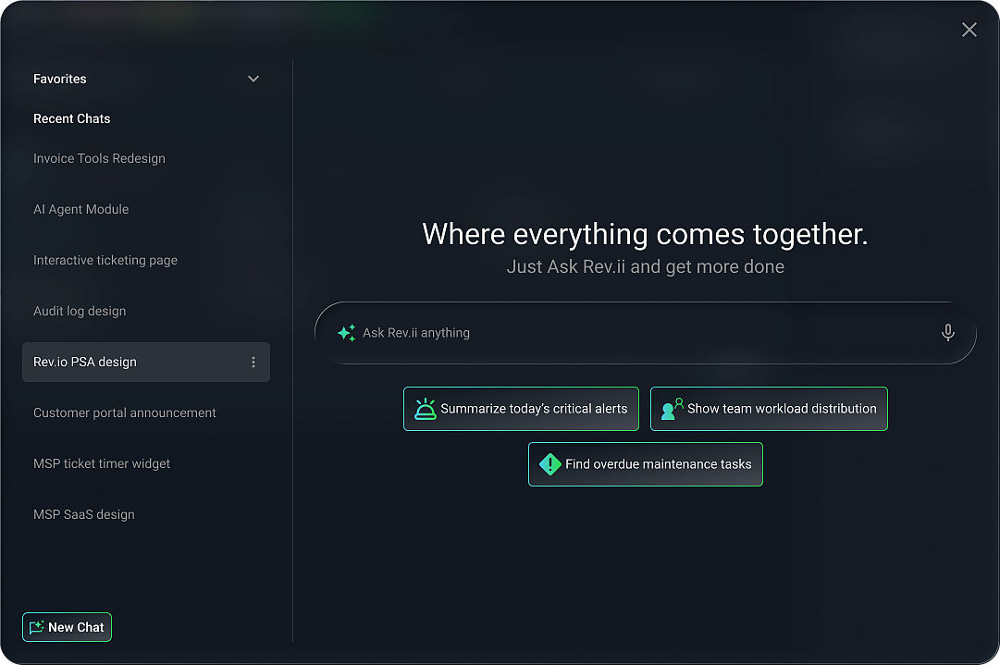
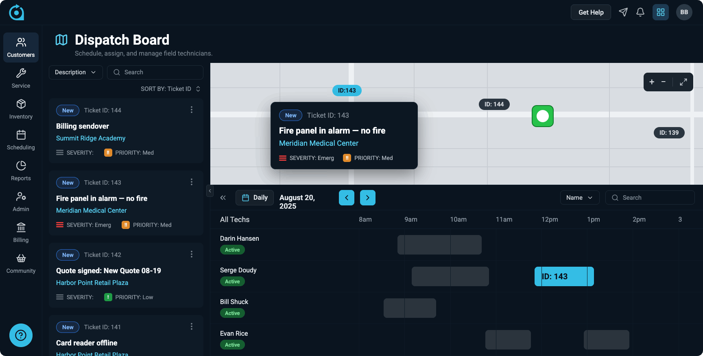
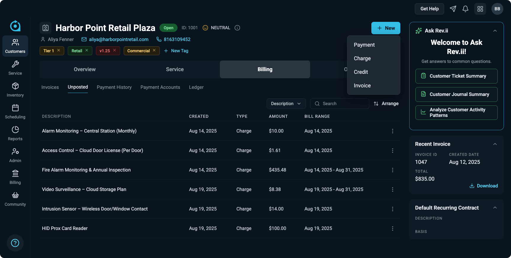
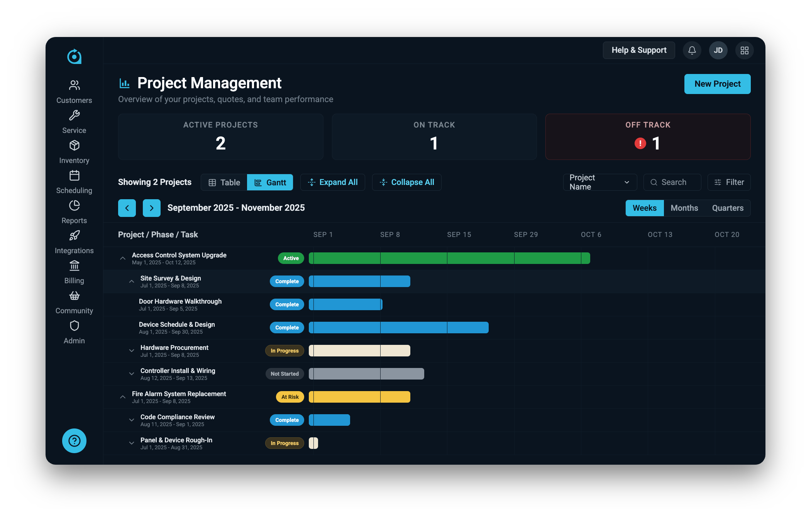
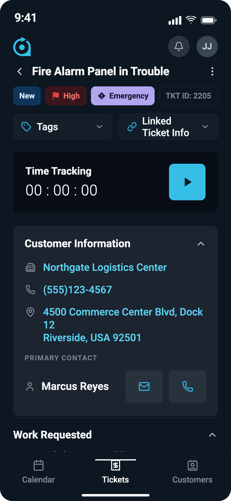

Trusted by 1,000+ service providers
Backed by years of proven success and industry recognition, our solutions empower service businesses to scale with confidence and agility.
5000
Place
To
Work
Our Mission
To help clients grow revenue efficiently.
Our Vision
To be the best billing and back-office software company in the world by providing innovative solutions and extraordinary service to our clients & end users.
One platform story for every product line.
Use this page live on discovery calls to route the conversation by buyer type, explain how the Rev.io platform fits together, and jump into the right product story without doing the tab-juggling circus.
Everything Rev.io does
Start broad, then narrow based on pain. The deck is built for live discovery, not linear slide reading.
Rev.io replaces fragmented service-provider operations with one connected platform.
PSA, communications billing, payments, RMM, Cyber Protect, Rev.io AI, CommerceHub, and partner workflows work best when they share customer, service, billing, and operational context.
When to lead here
- The buyer has multiple disconnected tools.
- Billing and service teams do not share clean handoffs.
- They want growth without more admin headcount.
What to listen for
- Manual invoice cleanup.
- Missed billable time or parts.
- RMM alerts that never become clean ticket, documentation, and billing records.

Source referenceJump into the right deck
Each section includes a talk track, fit, discovery questions, and suggested demo sequence.
Rev.io PSA
Run service, projects, field work, and billing from one connected operating system.
Talk Track
- Service desk, ticketing, dispatch, project management, customer management, inventory, quoting, and reporting.
- Mobile access for field teams so time, parts, notes, and work status are captured while work is happening.
- Service activity can flow toward billing and payments instead of living in a separate operational silo.
Discovery Questions
- Where does billable work get lost today: dispatch, time entry, project work, recurring services, or invoice prep?
- How many systems does your team touch between a customer request and a paid invoice?
- What parts of your field workflow still depend on phone calls, spreadsheets, or end-of-day cleanup?

Source referenceRev.io Billing
Billing built for providers with recurring, usage-based, contract, and service complexity.
Talk Track
- Supports complex recurring, usage-based, telecom, cloud, and service billing models.
- Helps reduce manual invoice work and revenue leakage when services, usage, taxes, and contract changes are hard to reconcile.
- Pairs with PSA and Payments so operations, billing, and cash collection work from the same customer context.
Discovery Questions
- Which part of billing takes the most manual effort: usage, contracts, taxes, changes, collections, or approvals?
- How often do you find missed charges after an invoice goes out?
- Do service teams and billing teams work from the same customer record today?

Source referenceRev.io Payments
Make it easier for customers to pay and easier for finance teams to collect.
Talk Track
- Payment workflows are part of the Rev.io platform story, not a disconnected side process.
- Useful for shortening the path from completed work to invoice to payment.
- Supports the broader quote-to-cash conversation when prospects care about cash flow, collections, and customer experience.
Discovery Questions
- What percentage of invoices still require manual follow-up before payment?
- Where do payment status, customer history, and invoice detail live today?
- What payment experience do customers expect from you now that they are not getting?
Rev.io RMM + Cyber Protect
Connect endpoint monitoring and protection to tickets, service work, and billing.
Talk Track
- Rev.io RMM and Cyber Protect are powered by Acronis capabilities and integrated into the broader Rev.io platform story.
- Endpoint alerts can become service workflows with customer context, documentation, and billable work captured.
- Security and operational visibility sit closer to service desk, billing, and account management.
Discovery Questions
- When an endpoint alert fires, how does it become a documented and billable service action?
- Where do backup, endpoint protection, and ticketing handoffs break down today?
- How do you prove security work was completed for a client?
Rev.io AI
Use AI to reduce manual work, surface insight, and make service documentation easier.
Talk Track
- Rev.io positions the platform as AI-native, with automation and insight connected to the operational data already in the system.
- AI can support service documentation, reporting, workflow recommendations, and faster visibility into operational trends.
- This is the thread that ties the deck together: one platform creates better AI context than a patchwork of disconnected tools.
Discovery Questions
- Where does your team spend time turning messy service notes into useful documentation?
- What operational questions are hard to answer without custom reporting?
- Which repetitive tasks would you automate first if your systems shared context?
CommerceHub
Procure inventory and connect purchasing into service delivery and customer work.
Talk Track
- CommerceHub extends the Rev.io platform into procurement and inventory workflows.
- Useful for providers that want quoting, ordering, inventory, service delivery, and billing to feel like one flow.
- Helps reps tell the growth story: sell the thing, procure it, deliver it, track it, and bill it.
Discovery Questions
- How do quoted products move into purchasing and fulfillment today?
- Where do vendor orders, inventory, and customer projects get out of sync?
- Can your team see margin and availability before work is committed?

Source referencePartners
Bring Rev.io into the broader technology, channel, and service-provider ecosystem.
Talk Track
- Rev.io is strongest when it becomes the operating layer across customer work, billing, payments, service delivery, and partner-delivered services.
- Partner conversations should connect the buyer's existing stack to the workflows Rev.io can own or improve.
- Use this section to talk about implementation, integrations, migration support, and strategic partner alignment.
Discovery Questions
- Which vendors or platforms are mission-critical to your daily workflow?
- Where do partner handoffs create delays, duplicate entry, or customer friction?
- What would a successful implementation partner need to understand about your business?
Questions that route the call
Use these to decide which product story to open first.
Operations
Ask: “What breaks between customer request, service work, and invoice?” If they describe handoffs, open PSA. If they describe usage or invoices, open Billing.
Revenue leakage
Ask: “Where do charges get missed or delayed?” Route to Billing, Payments, PSA time tracking, or CommerceHub depending on the answer.
Security + endpoints
Ask: “How do endpoint alerts become documented service actions?” Route to RMM + Cyber Protect.
Field teams
Ask: “What still waits until the technician gets back to the office?” Route to PSA mobile, dispatch, time, parts, and project work.
Procurement
Ask: “How do quotes turn into purchasing and fulfillment?” Route to CommerceHub and inventory/project flow.
AI
Ask: “What questions should leadership be able to ask without waiting on a custom report?” Route to Rev.io AI and unified data.
From pain to proof in 30 minutes
Keep the call grounded in the buyer’s workflow.
Discovery first. Product second. Demo third.
0-10 min
- Confirm business model.
- Map current stack.
- Find where work, billing, and reporting disconnect.
10-25 min
- Open the relevant product section.
- Use only the demo flow that matches the pain.
- Show the connected platform story, not every button.
25-30 min
- Recap the pains in the prospect’s words.
- Name the product lines that matter.
- Set the next demo around their workflow.
Do not do this
- Do not show every product equally.
- Do not lead with AI unless they gave you an AI problem.
- Do not turn discovery into a feature parade. That way lies sadness.

Source reference